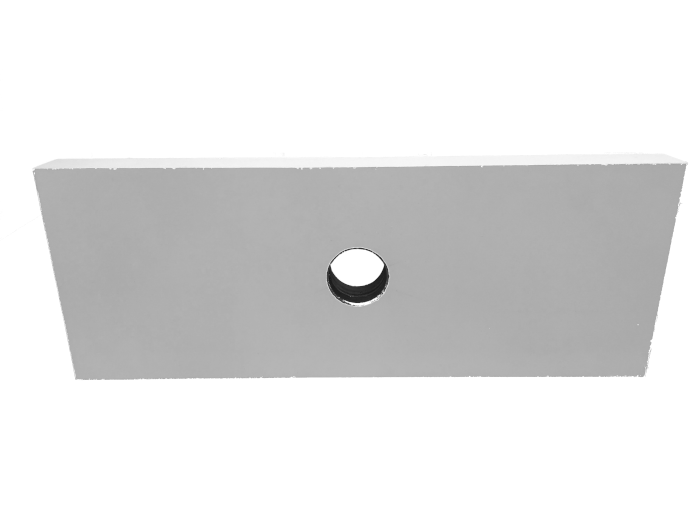
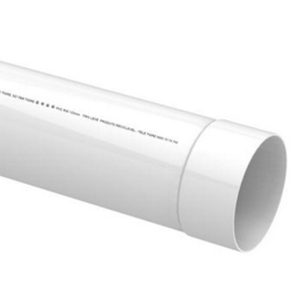
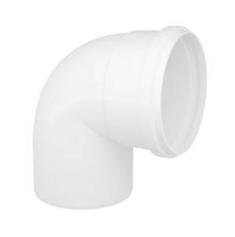
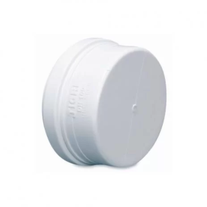
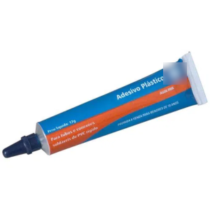
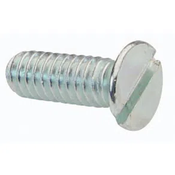
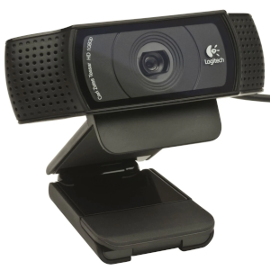

|  |
1 Placa de MDF 400 mm (comprimento) x 150 mm (largura) x 30 mm (altura) com furo passante de
40 mm no centro
Acabamento: cor branca com fita de bordo nas laterais Peso: 1250 gramas |
|  |
34 cm de tubo de esgoto PVC 40 mm
20 cm de tubo de esgoto PVC 40 mm |
|  | 1 joelho de esgoto PVC 40 mm 90º |
|  | 1 cap esgoto PVC 40 mm |
|  | adesivo plástico para PVC (opcional) |
|  | 1 parafuso 1/4 x 2/2 fenda inox |
|  | 1 webcam Logitech C920 Full HD 1080p |
1. Faça um furo no cap e rosqueie o parafuso
2. Fixe a webcam ao cap com o parafuso e a webcam
3. encaixe o cap no tubo de 20 cm
4. encaixe o joelho no tubo de 20 cm e no outro tubo de 34 cm
5. encaixe o tubo de 34 cm na base
Se for necessário utilize adeviso plástico para PVC para melhor fixação dos tubos
A instalação de led parte superior do suporte pode melhorar a captação das imagens em ambientes com pouca luminosidade